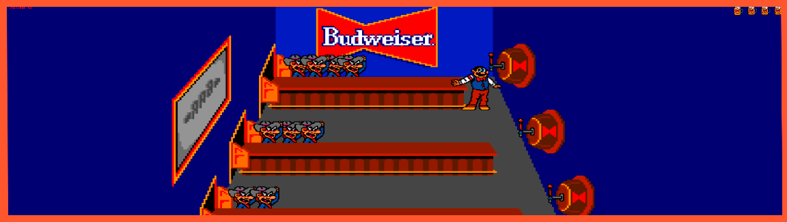

BeerMan
Remake of the famous Tapper made in Unity3D by two students. It was made for a subject called videogames engines.
How to install?
Due to this game is a remake, and therefore, only a small demo, there's no download content. If you want to specific play this specific one, please contact me for more information. Personal accounts below.